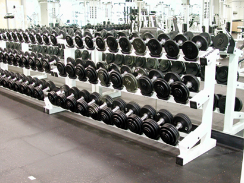

Significant literature in this era to me has been the Eragon series, consisting
of Eragon, Eldest, Brisingr, and Inheritance as Christopher Paolini's cycle of science
fiction and fantasy.
Dear future self I hope you are doing well and have made yourself successful.
I hope you look back and remember me typing this and thinking of how life was back
in 2012 compared to how life is in the time that you're living in.
I picture technology has advanced incredibly since 2012, maybe cars now drive
themselves and we don't have to worry about car accidents.
I imagine that the cure for cancer has been found and sold all around the world
and the world may be getting over populated because people are living so much longer
than anticipaed because of medical advancments.
I wonder if you're still bodybuilding, i hope so, it bring such joy to walk into
the gym and train my heart out and realize that eventually it's a means to an end.

The only limit to what you can have and achieve in your life
is the size of your imagination and commitment to making it reality.